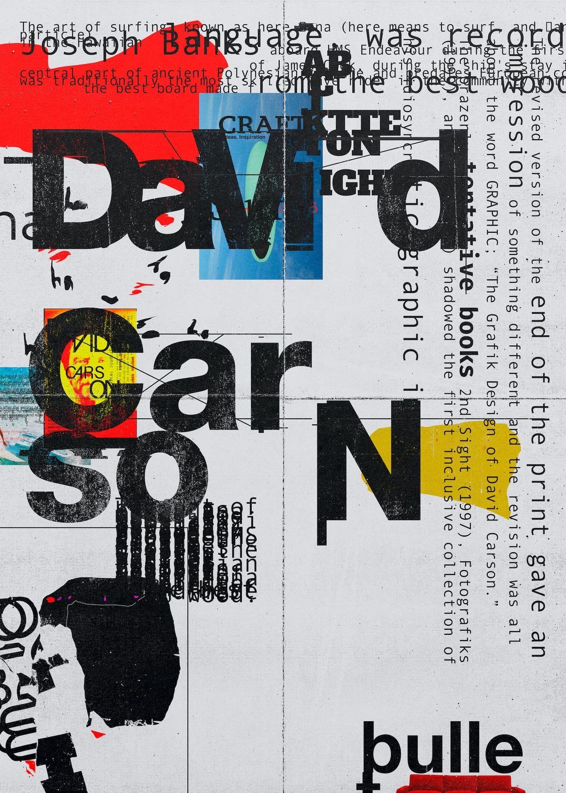
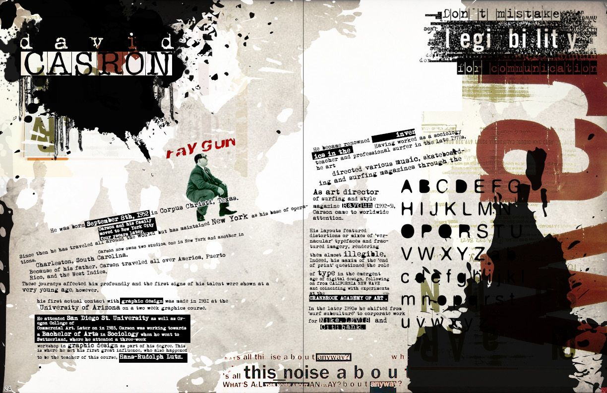

Кто он
Дуарте сформировал визуальный язык Google: интерфейс как цифровой материал с понятными законами поведения.
Архитектор Material Design: порядок, иерархия, физика интерфейсов.
Дуарте сформировал визуальный язык Google: интерфейс как цифровой материал с понятными законами поведения.
Material стал глобальным стандартом для Android, веб‑продуктов и дизайн‑систем крупных компаний.
Проверь состояния компонентов и elevation вживую.
Карточка меняет состояние и глубину (тень).
Интерактивная палитра Material. Выбери токен и смотри, как меняется система.
#1A73E8
Токены применяются к интерфейсу в реальном времени.
Выбери цвета и размер шрифта. А11y проверит контраст.
Contrast: —
Проверочный текст для оценки читаемости.
Деконструкция. Эмоция выше читаемости.
Редакционный дизайн как визуальный шум и высказывание.

Слои, разрывы, смещения, конфликт шрифтов.

Карсон использовал форму как главный носитель смысла и настроения.
Смешение гарнитур, рваный ритм, намеренный диссонанс.

Сознательный отказ от удобства ради чистой эстетики.

Карсон показал: дизайн может быть не сервисом, а художественным жестом.
«Don’t mistake legibility for communication.»
Один и тот же инструмент — веб-дизайн — может быть либо системой правил, либо эмоциональным экспериментом.
| Критерий | Material | Carson |
|---|---|---|
| Цель | Удобство и ясность | Эмоциональный эффект |
| Сетка | Строгая 12-колоночная | Намеренно ломается |
| Типографика | Иерархичная и читаемая | Контрастная, хаотичная |
| Анимация | Плавная, физичная | Резкая, дерганая |
Дуарте показывает, как сделать интерфейс универсальным и понятным, а Карсон — как превратить визуальную форму в высказывание. В современном дизайне чаще всего работает баланс: структура + эмоция.